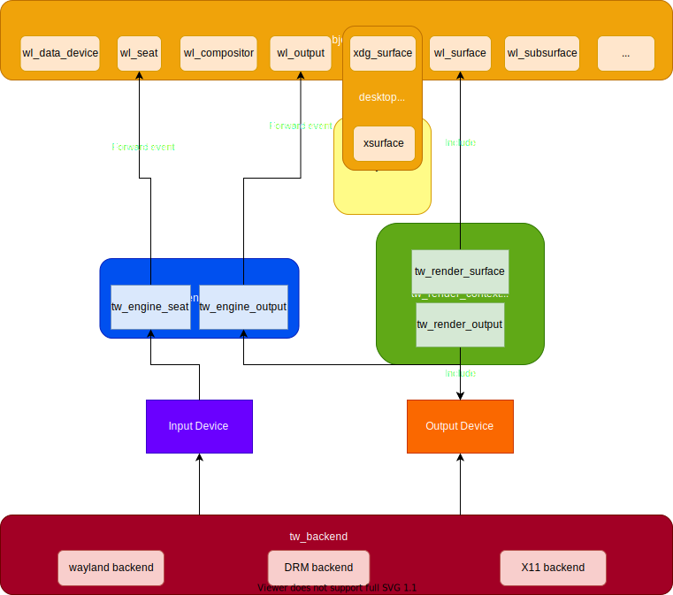
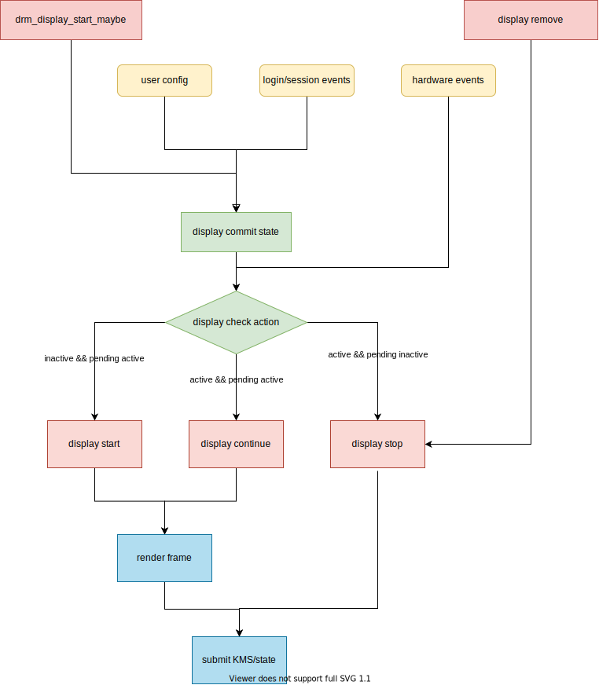

For libtaiwins users ¶
The easiest way to draft a wayland compositor using libtaiwins is by looking at the some of the backend tests, these tests generally tries to start one backend and then create a minimum compositor, such as the x11-test.c . You will see that it takes as few as 100 lines of code to run a compositor (with some help of course).
I would like to briefly describe the libtaiwins architecture here. As little as my drawing skills, an accurate enough graph of libtaiwins architecture presents:
{kind=link}
On the end end we have
tw_object
implements the wayland object in C, on the
other end we have
tw_backend
for abstracting hardwares. The
tw_engine
is
the middle man connects them together. It takes input events from backends and
forward it to the
wl_seat
, sets correct output mode you asked in the
backend. You can completely ignore it of course, as it is not referenced by
backends, but then you have to connect all the types yourself. The
tw_render_context
, on the other hand, it is used by the backends, you need to
create it them pass to the backend. It handles the GPU resources and provides
drawing interfaces we called
pipeline
. Other subsystems like
tw_shell
,
tw_console
are not shown in the graph, they are taiwins specific protocol
implementation.
tw_engine ¶
If you decide to take advantage of
tw_engine
, initialize it is as simple as
tw_engine_create_global
, which takes the backend and
wl_display
. Then you
can query the engine some of the engine state (including output and seat)
later.
tw_engine
is event driven, you can implement the compositor logic by
listening to the
output_(create/destroy)
and
seat_(create/destroy)
signals. The engine includes quite a few protocols, like
tw_layers
,
tw_presentations
, etc. A good example user of
tw_engine
is the “compositor
desktop logic”, the “compositor desktop” needs to implement API calls from
xdg_surface
and
wl_shell_surface
such as
set_fullscreen
,
set_minimized
. Taiwins implement those by working with layers.
The render context ¶
The
render_context
in the taiwins initialize by a
render_context_create
, it
closes work with buffers from
wl_surface
s, when a wayland client commits its
surface, the render context needs to convert the buffers into a texture so
later it can be painted. A renderer, for example, the default taiwins renderer,
utilises those textures and compose them together to look like a desktop.
A compositor need to implement a
repaint_output
logic eventually, it is not
done by libtaiwins. This way, you could paint your compositor very differently
from others.
The desktop logic ¶
We mentioned the desktop logic above, it is another part where compositor
writers need to handle themselves. The main purpose of this component is
deciding the position of
wl_surface
s. A stacking compositor can use the
logic as simple as the
test
desktop. The taiwins itself implements a more complex scenario.
For libtaiwins developers ¶
Hi there, so you decided to take on the quest of forging libtaiwins? Good for you :P. You may already tried the libtaiwins API, there are some you don’t like very much, you may want add new features for your compositor, it is all yours to play with. I am sure at this step, you already know how you are going to do it. Well, if undecided, you can simply adding a proposal issue, you may find some other people already doing it.
I could, however, here to give you a little roadmap for each of the components you may need to work with.
tw_objects ¶
At the end of the day, a taiwins compositor need to handle
tw_objects
for all
the wayland magic to happen, though is not the most exciting component, for
libtawins developers, you would need to handle them correctly at the right
time. It could be your case that you implement one
tw_object
for a specific
protocol you need. The process involves grabbing the wayland protocol and
creating a C interface around it. Usually you create signals for handling
client requests in libtaiwns and exposes the
tw_object
APIs for a
response. Once you are done, the last is deciding where the object resides in
libtaiwns, currently most of them lives under
tw_engine
but this depends on
your needs.
The render context ¶
For developers, writing a render context requires you preparing creating a
render_output
object for the backends, usually in the form of
EGLSurface
. preparing the textures and potentially the framebuffers for a
renderer is the other side of the job.
The backend ¶
If you want to add new features for backends, you could do it through signals
or you can adding new callbacks in
tw_backend_impl
depends where the events
driving from.
You may want a new backend, such as remote desktop, then the burden of
abstracting
input_device
and
output_device
is on your shoulder, a backend
first prepares a so called “render context parameters” for abstracting away
specific render API calls, the backend then start with a render context, at
this point is where you signal new input and outputs, at last. Once started,
the backend waits on a commit output for buffer swapping and signal the
output.present
event for presentation feedback users. At last, if the render
context is lost somehow, you need to handle it and signal the
backend.stop
.
DRM backend ¶
Until now, the most complex backend(and the one missing many features) is the
drm backend because of its nature. I have to assumes you know the
basics of libdrm, the data type involved and how to work with it. If not, I
highly recommend checking out the very well documented
drm
howto
. The complexity is two folds here, we
need to handle the display discoveries and losses and we need to setmode. In
the context of drm backend, it means a page-flip, not only we need to set
current framebuffer on the
drmPlane
, it is also the chance to update display
mode and other properties.
A rough description of the drm backend workflow is shown here
{kind=link}
Note that this diagram captures the various events and corresponding drm action
responses(they all boils down to start/continue/stop actions), the details
about state setting is skipped. Taiwins’ drm backend is designed in such way
that framebuffer creation(
gbm_bo
) code is seperated from KMS code.